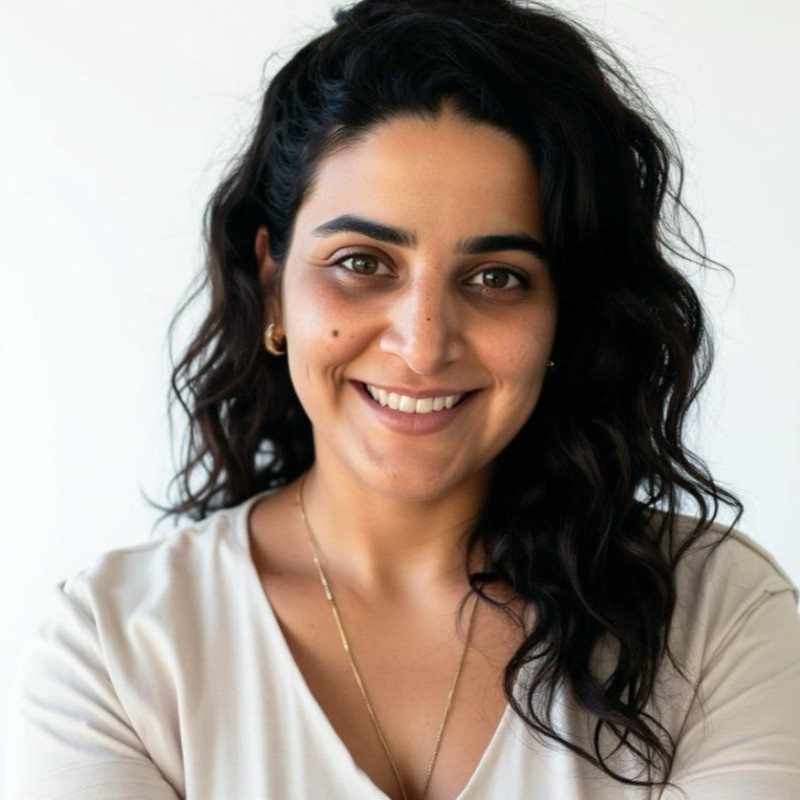

Business Applications & AI Automation Manager
Owns enterprise business applications end to end and designs AI-powered workflows. Leads rollout, training and adoption.

Business Applications & AI Automation Manager
Translating business needs into scalable, AI-enhanced solutions, from implementation to adoption.
I specialize in business applications that improve efficiency, reduce costs, and automate cross-departmental workflows. Today I design AI-powered workflows that connect applications and enable data-driven operations. With experience at CYBR and Playtika, I lead scalable implementations that align technology with business strategy. My background includes enterprise system ownership, vendor management, hands-on platform configuration, API-based integrations and global project delivery. I make sure tools are not just adopted, but impactful.
Owns enterprise business applications end to end and designs AI-powered workflows. Leads rollout, training and adoption.
Managed ERP, CRM and analytics integrations supporting 3,000+ global employees. Led implementation projects across Product, HR, Finance and IT.
Led full-cycle SaaS implementations and owned API-based integrations from design through QA.
Customized and activated an ERP system to give visibility into inventory, vendor performance and costs.
Worked on SAP CRM and FI/CO rollouts and end-user training.
Managed about 80 soldiers and officers, and received Outstanding Officer recognition.